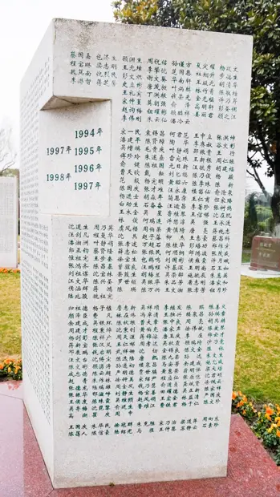

捐献实现者纪念园：侯涵辉
访问原网页 ↗Visit original website ↗

S249 · 上海市红十字会主办／上海福寿园承办 · 1994–1997（碑区）
纪念园个人档案把侯涵辉列为捐献实现者，给出碑上位置。官方碑照可辨其姓名，右邻为蒋鸿，次序与1995年度名录相同。本页没有公开死亡或捐献的具体月日，也没有列出家属。The municipal Red Cross memorial identifies Hou Hanhui as a donor whose donation was fulfilled. Her name appears in row 30, column 1 of the 1994–1997 monument. The inscription places Jiang Hong beside her, matching the 1995 roll. No precise date or family relationship is given.
馆藏图像与原文Archived images and documents
- 上海福寿园1994–1997纪念碑碑照Memorial block containing Hou Hanhui’s inscription I108
- 侯涵辉的碑位与题名局部Hou Hanhui’s memorial entry and inscription detail D127

来源页摘录Source-page excerpt
红十字遗体（器官、角膜）捐献者纪念园
“侯涵辉”在捐献实现者纪念碑上的位置是：1994-1997纪念碑，第30行，第1列。
原始网址Original URL
https://hongshizi.fsygroup.com/hero/show/2407